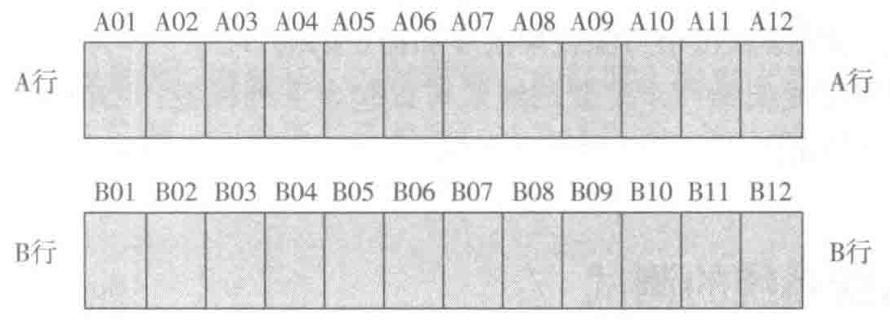

所有机架和机柜应当在正面和背面粘贴标签。每一个机架和机柜应当有一个唯一的基于地板网格坐标编号的标识符。如果机柜在不止一个地板网格上摆放，通过在每一个机柜上相同的拐角（例如，右前角或左前角）所对应的地板网格坐标编号来识别。
在有多层的数据中心里，楼层的标志数应当作为一个前缀增加到机架和机柜的编号中去。
例如，上述在数据中心第三层的 AJ05 地板网格的机柜标为 3AJ05。
一般情况下，机架和机柜的标识符可以为以下格式为 nnXXYY，其中 nn 为楼层号，XX 为地板网格列号，YY 为地板网格行号。
在没有地板的机房里，也可以使用行数字和列数字来识别每一个机架和机柜，如图 7-33 所示。

2. 配线架标识
配线架的编号方法应当包含机架和机柜的编号以及该配线架在机架和机柜中的位置信息。在决定配线架的位置时，水平线缆管理器不计算在内。配线架在机架和机柜中的位置可以自上而下用英文字母表示，如果一个机架或机柜有不止 26 个配线架，需要两个特征来识别。
3. 配线架端口的标识
用两个或三个特征来指示配线架上的端口号。比如，在机柜 3AJ05 中的第二个配线架的第四个端口可以被命名为 3AJ05-B04。
一般情况下，配线架端口的标识符可以为以下格式为 nnXXYY-A-mmm，具体含义：nn 为楼层号；XX 为地板网格列号；YY 为地板网格行号；A 为配线架号（A-Z，从上至下）；mmm 为线对 / 芯纤 / 端口号。
4. 配线架连通性的标识
配线架连通性管理标识为 p1-to-p2，其中：p1 为近端机架或机柜、配线架次序和端口数字，p2 为远端机架或机柜、配线架次序和端口数字。
为了简化标识和方便维护，考虑补充使用 ANSI/TIA/EIA-606-A 中用序号或者其他标识符表示。例如，连接 24 根从主配线区到水平配线区 1 的 6 类线缆的 24 口配线架应当包含标签“MDA-to-HDA1-Cat6UTP1-24”。
在图 7-34 中，用于有 24 根 6 类线缆连接柜子 AJ05 到 AQ03 的 24 口配线架的标签，